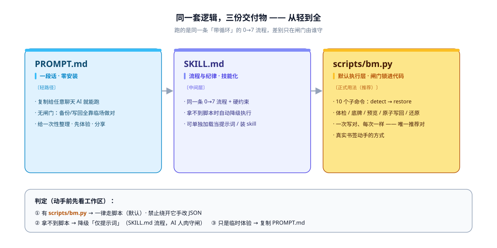

轻
PROMPT.md
无闸门
一段话 · 复制给任意 AI
零安装的纯文本提示词，把 0→7 流程压缩成一段话。备份做没做、写坏没坏，全靠 AI 自觉。
适合：不 clone / 一次性小改 / 先体验 / 分享给别人
Agent Skills 标准 · MIT · 零第三方依赖 · v1.14.4
Chrome / Edge 的书签底层就是一个纯 JSON 文件。绕开「导出 HTML → 导入」的追加地狱， 让 AI 按内容归类、重排、改名、去重、清理失效链接——重启浏览器即生效，开着同步自动同步到账号。
一句话定位 一段提示词打底，一份脚本保底——默认用脚本跑。
浏览器的导入是追加不是替换——整理完永远多出一个「已导入」文件夹，还得手工去重合并。
说实话，让 AI 自由发挥整理书签，效果通常也不差——AI 完全有能力读 JSON、归类、去重、写回去。 但「能做」和「每次都做得对」之间差着安全距离：没有强制备份、改了什么不透明、写坏了靠运气。 本仓库补的是完整性、安全性、可靠性——让每一次整理都可回溯、可校验、可还原， 无论交给哪个 AI 跑，结果都一致。
同一套逻辑的三种形态，闸门由谁守是唯一区别。真实书签一律走最下面那级。
零安装的纯文本提示词，把 0→7 流程压缩成一段话。备份做没做、写坏没坏，全靠 AI 自觉。
符合 Agent Skills 开放标准。先看结构 → 先提方案 → 拍板才写 → 复验 → 可还原，流程不变，闸门由 AI 守。
体检 GO/NO-GO、自动备份 + sha256、HTML 预览、原子写回、一键还原，全部锁在 1010 行零依赖代码里。
三条路跑同一条带循环的 0→7 流程，差别只在闸门由谁守。悬停任意节点看说明。
scripts/visualization/ 生成 · 自动适配明暗主题）

只有 finalize 一步会真正改文件，其余都在内存 / 候选文件里折腾。悬停站点看细节。
八道护栏，每道都对应一次真实踩坑。它们锁在代码里，不依赖 AI 的自觉。
① 进程名检测（tasklist / pgrep）；② Profile 占用锁（SingletonLock 存在即拒）——回答「跑着的是不是这一个 Profile」。
先落 .tmp 再 os.replace，中途失败不会留下半个 JSON；候选结构非法直接拒绝写回。
finalize 自动复制 prescript，restore 自动复制 prerestore——漏做 backup 也不至于裸奔。
写回前先把结构渲染成可折叠的本地 HTML 让你肉眼核对；预览和浏览器看到的一致，才证明脚本可信。
去重只在同目录内合并，跨目录同链接保留；show 会逐条标注「同目录（会去重）/ 跨目录（保留）」。
候选 0 条直接拒绝，条数暴跌 <50% 大声告警——防「AI 改 JSON 把书签弄丢一半」。
目标存在却解析不出 roots 拒绝覆盖（防指到 Preferences）；--from 与 --target 同文件也拒绝。
restore 覆盖真身前先校验底牌能解析、有 roots——坏底牌直接拒绝，绝不连最后一份好副本也写坏。
preflight 会在体检时点出这一点，
唯一的保险始终是磁盘上那份底牌。
scripts/bm.py：单文件、1010 行、仅 Python 标准库。只读 命令随便跑，写 命令带闸。
| 命令 | 作用 | 性质 |
|---|---|---|
detect |
按 OS 环境变量自动定位各浏览器 Profile 的 Bookmarks（根路径不写死，跨 Win/mac/Linux），还能识别 Chromium / Brave / Vivaldi / Opera | 只读 |
preflight |
只读体检：存在 / 可读写 / JSON 合法 / 浏览器进程 / Profile 占用锁 / 是否开云端同步 → 给出 GO / NO-GO | 只读 |
backup |
改前时间戳底牌 + sha256 校验 + 打印可直接粘贴运行的还原命令（绝对路径） | 写 |
show |
打印真实结构（目录树 / 数量 / 重复 id / 重复 URL / checksum）；--depth N 只看 N 层、--stats 只看体检；重复 URL 标出同目录还是跨目录 |
只读 |
plan |
内存里按 --sort / --dedup 重排到候选文件，绝不碰原文件 |
写候选 |
preview |
渲染成本地嵌套树 HTML（<details> 可折叠、无 JS），双击肉眼核对；--base 附「删 / 增 / 移动 / 改名 / 副本减少」差异 |
写候选 |
diff |
路径感知对账：除增 / 删 URL 外，还能识别移动（同名链接换目录）、改名、副本减少（删掉多份同名同链中的一份） | 只读 |
finalize |
唯一动真身：先验候选与目标合法性（目标解析不出 roots 也拒，防误盖别的文件）+ 删 checksum + 改名陈旧 .bak + 原子写回（先 .tmp 再 replace）；浏览器在跑 / Profile 被占用拒绝（除非 --force），写前自动再兜一份；--from 与 --target 同一文件则拒；候选 0 条拒绝、条数暴跌 <50% 告警 |
写 |
verify |
JSON 合法性 + 结构合法 + id 唯一 + 数量对账；传 --before 时额外给出变更分类（删 / 增 / 移动 / 改名 / 副本减少），与 diff 同口径 |
只读 |
restore |
回退到底牌那一刻；与 finalize 同级安全闸（浏览器在跑拒绝）并自动兜底；覆盖前先校验底牌，坏底牌不碰真身 |
写 |
三条路跑的是同一条 0→7 流程，区别只在闸门由谁守。真实书签走第一种。
clone 本仓库后，让 AI 调用 scripts/bm.py。体检、底牌、闸门、写回、校验、还原都锁在代码里。
# 0 定位 + 体检（找出要整理哪个 Profile，拿到 GO 才继续）
python scripts/bm.py detect
python scripts/bm.py preflight --file "<Bookmarks>"
# 1 底牌（会打印 restore_cmd，先复制存好）
python scripts/bm.py backup --file "<Bookmarks>"
# 2 读准结构
python scripts/bm.py show --file "<Bookmarks>"
# 3 循环区：重排到候选 → 预览核对（可无限次，不碰真身）
python scripts/bm.py plan --file "<Bookmarks>" --out cand --sort --dedup
python scripts/bm.py preview --file cand --base "<Bookmarks>" --out preview.html
# 4 满意后写回（浏览器已完全退出）
python scripts/bm.py finalize --from cand --target "<Bookmarks>"
# 5 校验 & 6 重启浏览器验收
python scripts/bm.py verify --file "<Bookmarks>" --before "<底牌>"
# 7 不满意：一键回退到底牌那一刻
python scripts/bm.py restore --backup "<底牌>" --target "<Bookmarks>"<Bookmarks> 由 detect 给出；Windows 一般形如 %LOCALAPPDATA%\Google\Chrome\User Data\Default\Bookmarks，Edge 把 Google\Chrome 换成 Microsoft\Edge。
把 SKILL.md 加载进 AI（联网装 skill、或直接把文件交给它），流程不变，闸门由 AI 人肉守。
加载 SKILL.md，帮我整理书签。
流程按 0→7 走：定位 → 体检 → 备份 → 读结构
→〔循环：提方案 → 我确认 → 再改〕
→ 我拍板才写回 → 校验 → 重启验收
→ 不满意用底牌还原。
没有 scripts/bm.py 时按「仅提示词时怎么做」的硬约束执行，
不要假装跑 bm.py。把 PROMPT.md 整段复制给任意聊天 AI，再补一句「我的书签文件路径是 ……」。零安装，也零闸门。
你是"浏览器书签整理助手"。Chrome/Edge 等 Chromium 浏览器里，
书签本质是一个 JSON 文件，直接改文件 = 正式修改书签，
重启浏览器后生效（开着同步会自动同步）。
不要走"导出 HTML → 导入"——导入是追加不是替换。
动手前按顺序做完这三件事：
1. 定位书签文件（找不到就问，不许编造路径）
2. 请我确认浏览器已完全退出（含托盘/后台图标）
3. 备份为 Bookmarks.backup-<YYYYMMDD-HHMMSS>，并把路径告诉我
然后：解析结构给我确认 → 在副本里整理 → 我拍板后写回
→ 复验 → 重启验收 → 不满意用备份盖回。
绝对不做：不经我逐条同意就删任何书签；改动 date_added 的数值。scripts/test/sample/ 是随仓库入库的通用站点演示样例（before 乱 40 条 / after 归好 38 条，零隐私），跑完整流程也碰不到真实数据。
plan / preview / diff 一个字节都不写进真身，可以无限次预览到满意为止；finalize 是唯一写入口。
backup 会当场打印一行绝对路径还原命令。看到它的那一刻就生效了——先复制到记事本，再继续往下走。
54 项零依赖回归，约 1 秒跑完。它锁的是安全不变量，不是覆盖率。
| 版本 | 回归项数 | 关键变化 |
|---|---|---|
| v1.6.0 | 28 | 首次引入 run_tests.py |
| v1.7.0 | 32 | 云端同步感知 |
| v1.8.0 | 42 | 占用锁 + 最小参数路径 |
| v1.9.0 | 46 | 底牌校验 / 拒绝自我覆盖 |
| v1.10.0 | 48 | 数量护栏（防丢书签） |
| v1.13.0 | 54 | 脏输入边界加固 6 项 |
| v1.14.4 | 54 | README 排版系统重构，行为零变化 |
plan 有没有写过源文件
scripts/test/sample/ 是随仓库入库的通用站点演示样例：before 40 条乱放，
after 38 条全部归好类，净变化 -2（去重掉 1 条同目录重复 + 删掉 1 条失效链接）。
make_sample.py 全确定性，重跑逐字节一致。
| 验证命令 | 预期输出 |
|---|---|
show --stats | 40 条 · 1 组同目录重复 URL |
plan --sort --dedup | 40 → 39，原文件未动 |
diff before → after | 删 1 / 增 0 / 移动 38 / 改名 0 / 副本减少 1 |
verify after | JSON 合法 · 无 checksum · 38 条 · 无结构问题 |
Windows / macOS / Linux × Python 3.9 / 3.11，跑同一套测试 + 样例端到端冒烟。
零第三方依赖，python scripts/test/run_tests.py 一条命令，改完 bm.py 必跑。
测试不碰真实 Profile——浏览器进程、占用锁一律模拟，跑测试不需要关浏览器。
真实目录树。灰色标注的 scripts/test/Bookmarks.* 含隐私、被 .gitignore 屏蔽，不入库。
不吹能力，先把做不到的事写清楚。
改文件时浏览器必须完全关着（含托盘后台），这是机制限制。
date_added 是自 1601-01-01 的微秒，bm.py 已自动转日期显示。
不判断链接是否失效、内容好坏；失效链接的取舍由你拍板。
detect 的 macOS / Linux 分支与更多内核已实现，但尚未在非 Windows 机器上实测。
本地删除会同步传播到所有设备；restore 也会退回底牌之后从他端同步来的书签。
归类、改名、移动仍是 AI 的判断；plan 目前只脚本化 --sort / --dedup。
链接指向 GitHub 仓库内的原文（本站只部署全景观览页本身）。